Onde a brasa encontra o vinho — e a cerveja nasce dentro de casa.
Belo Horizonte
de produção própria
em circulação
de chopp artesanal
O fogo manda no tempo
Na D'Bulltique, a parrilla não é um método — é uma filosofia. Cortes nobres assados lentamente sobre a brasa, sem pressa, do jeito que a tradição argentina ensina e a hospitalidade mineira serve.
- Cortes nobres na brasa — selecionados e preparados no ponto exato
- Fogo de verdade — parrilla à vista, defumado natural, sem atalhos
- Acompanhamentos da casa — feitos para dividir a mesa
Da brasa à sobremesa
Um cardápio que começa no fogo e termina na colher — entradas para dividir, carnes no ponto e finais doces que valem a espera.
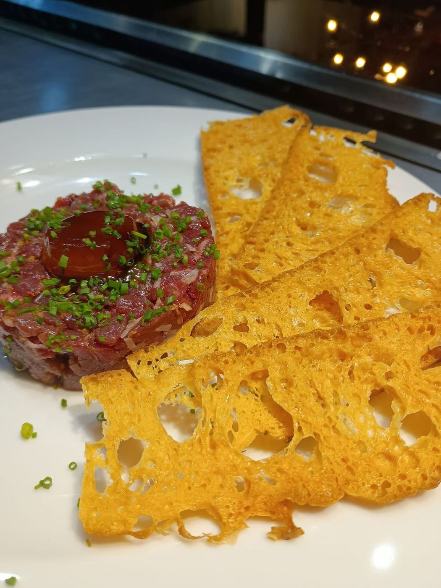
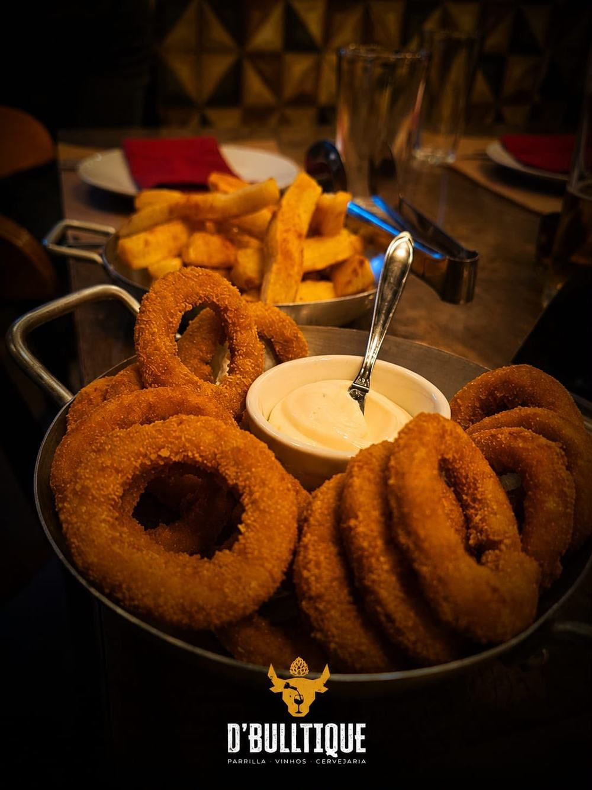
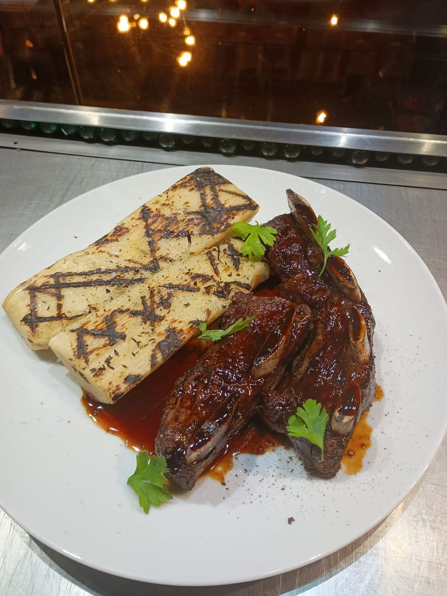
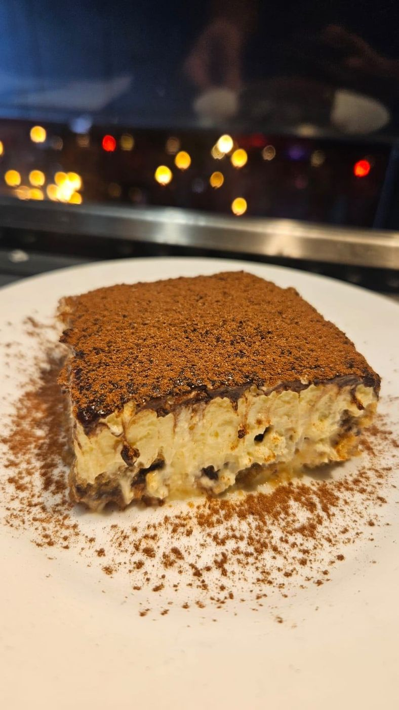
Taças que conversam com a carne
Uma carta pensada para o casamento com a parrilla: tintos encorpados, rótulos de guarda e descobertas que valem a conversa. E, no cruzamento das nossas casas, nasceu o que só existe aqui: o Chopp de Vinho D'BullBeer.
- Carta selecionada — curadoria voltada à harmonização com a brasa
- Serviço em taça — para provar sem compromisso com a garrafa
- Chopp de Vinho — o encontro da adega com a cervejaria, exclusivo da casa
D'BULLBEER
Não servimos cerveja artesanal. Fabricamos. Cada chopp parte de grãos e lúpulos escolhidos um a um — da matéria-prima selecionada à torneira, com produção própria, insumos rastreados e identidade de verdade no copo.
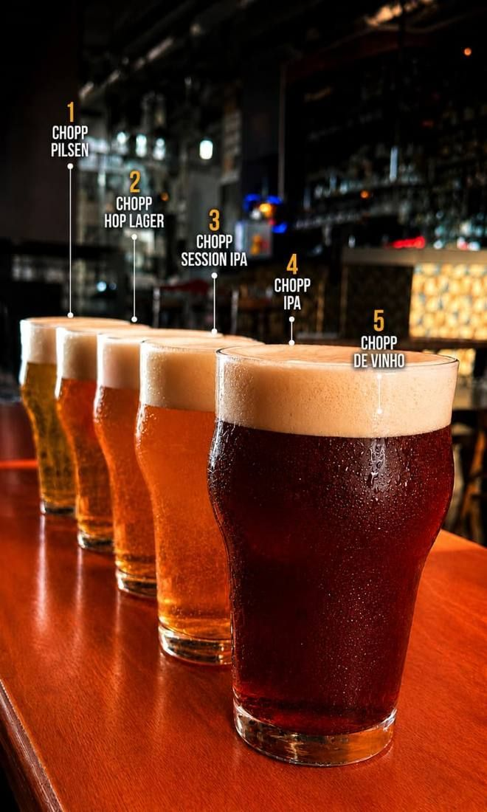
Pilsen
Leve, dourado e refrescante. O clássico de entrada, fácil de beber e sempre certeiro.
480ml R$ 15 · Growler 1L R$ 34Hop Lager
Lager com lupulagem extra. Mais aroma e personalidade, mantendo a leveza.
480ml R$ 18 · Growler 1L R$ 38Session IPA
Aromática e tropical, baixo teor alcoólico. Notas cítricas que convidam ao próximo gole.
480ml R$ 19 · Growler 1L R$ 42IPA
Amargor marcante e lúpulo no comando. Para quem busca intensidade e caráter.
480ml R$ 20 · Growler 1L R$ 42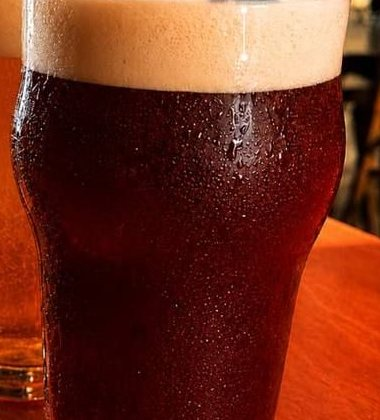
Chopp de Vinho
Encorpado e rubro, a assinatura da casa. Une parrilla, vinho e cerveja num só copo.
480ml R$ 18 · Growler 1L R$ 40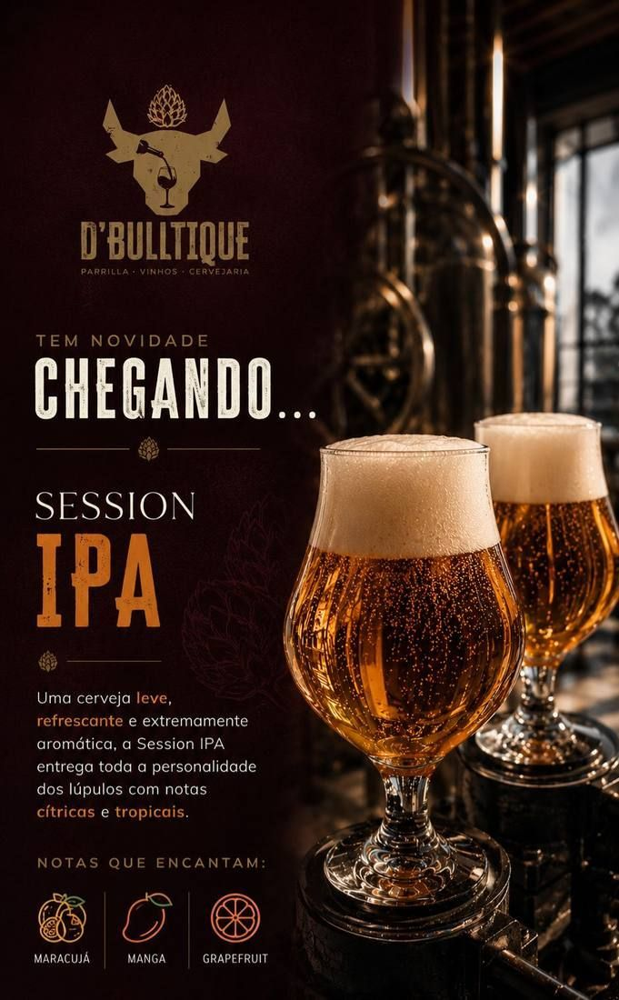
Session IPA
Leve, refrescante e extremamente aromática. Entrega toda a personalidade dos lúpulos com notas cítricas e tropicais — sem pesar. A porta de entrada perfeita para quem quer conhecer o mundo das IPAs.
Provar no salãoDa nossa fábrica para sua mesa
A cervejaria fica dentro da casa. Mostura, fervura e fermentação conduzidas aqui, com controle de cada etapa — do tanque ao copo, sem intermediários. São 15.000 litros por mês e 70 barris em circulação.
- Produção própria — controle total da brassagem à torneira
- Insumos rastreados — lote, safra e origem documentados
- Frescor garantido — logística própria em BH e região
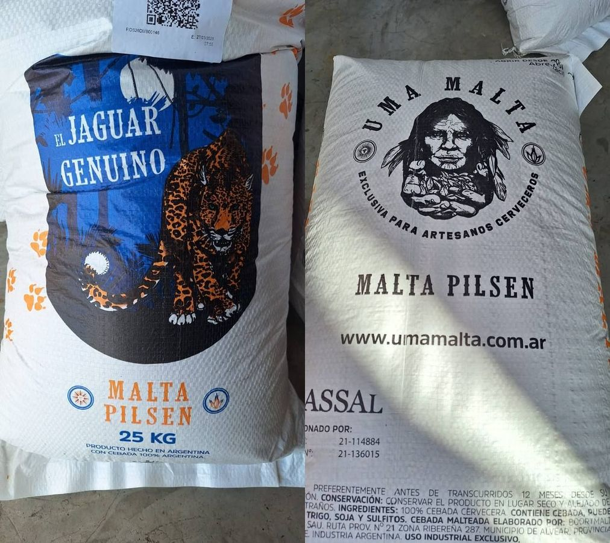
Malta Pilsen El Jaguar & UMA Malta
Cevada 100% argentina, de perfil maltado limpo. A espinha dorsal das nossas lagers e da Session IPA.
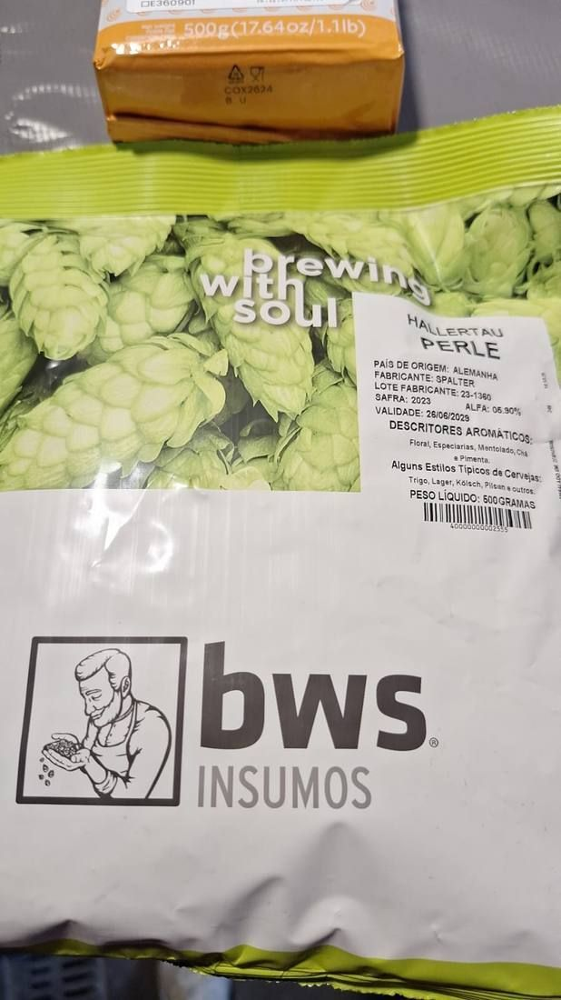
Hallertau Perle
Lúpulo nobre de dupla finalidade: amargor refinado e aroma floral, levemente condimentado, que assina nossas receitas.
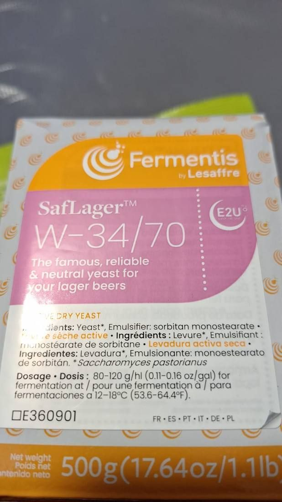
SafLager W-34/70
A cepa lager mais confiável do mundo. Perfil neutro e limpo que deixa o malte e o lúpulo se expressarem.
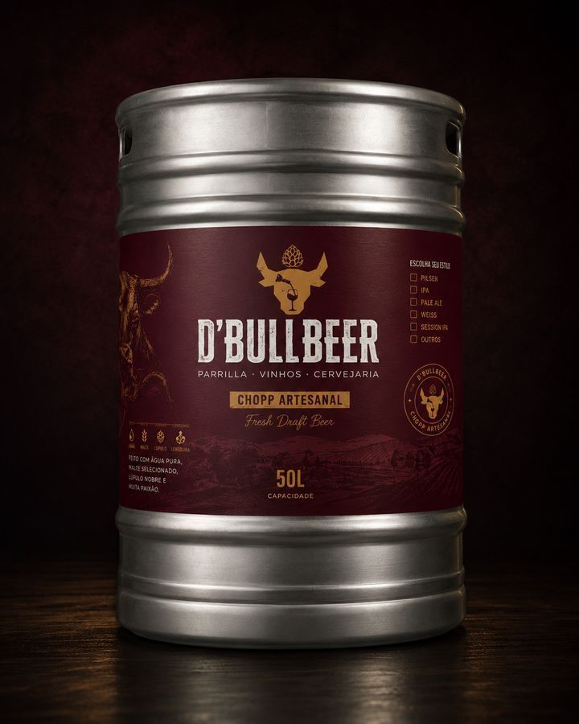
Bares, eventos e operações de chopp contínuo.
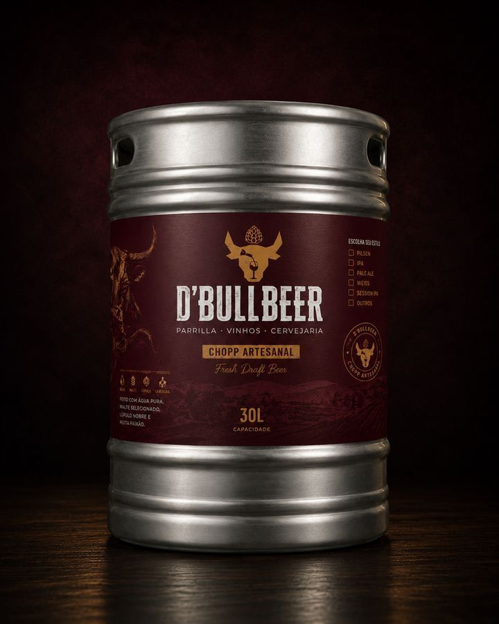
Ideal para pontos de menor volume ou estilos rotativos.
Chopp fresco na sua casa. A experiência da D'Bulltique na sua mesa.
Vamos colocar a D'BullBeer na sua torneira?
Fornecimento recorrente de barris para bares, restaurantes e eventos, com produção sob demanda e logística própria em Belo Horizonte e região. Fale com o comercial para tabela, condições e o primeiro pedido.
Copa do Mundo 2026
Todos os jogos com telão, brasa acesa e chopp da casa gelado. A mesa mais disputada do Castelo nesta Copa é a nossa — garanta a sua antes que o apito soe.
Vem sentir o cheiro da brasa
Endereço
Av. Altamiro Avelino Soares, 1.021
Castelo · Belo Horizonte/MG · CEP 31.330-000
Horários
Ter–Dom · a partir das 11h30 (fechamento: consulte o Google — confirmar)
Reservas & Contato
Telefone e WhatsApp: (31) 3582-7134 · Instagram: @dbulltique
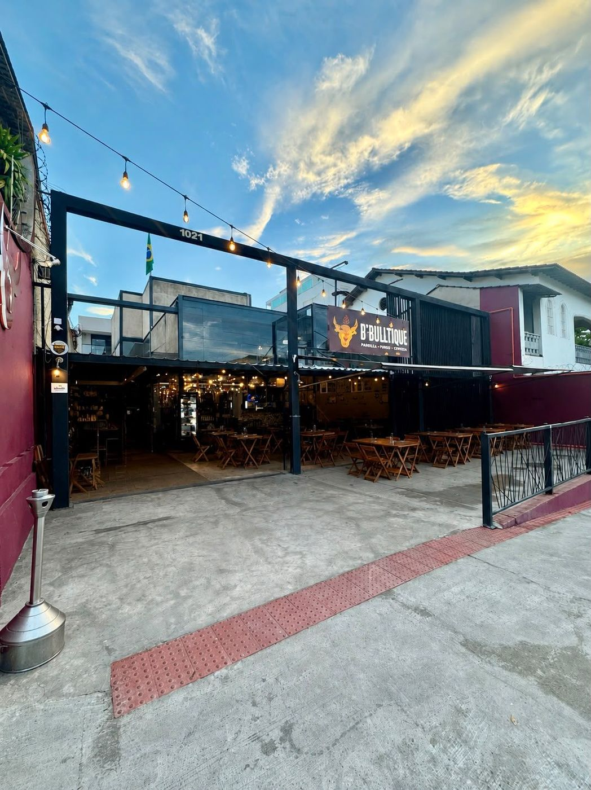
Três casas.
Um fogo. Sua mesa.
Reserva direto pelo WhatsApp — resposta rápida, mesa garantida.
Reservar minha mesa